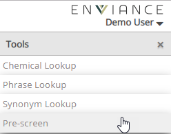
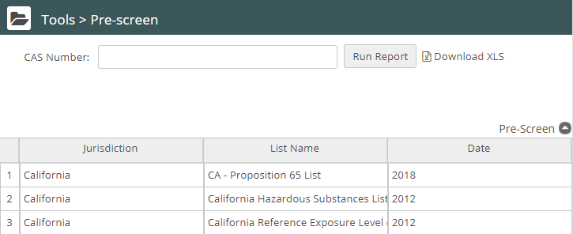
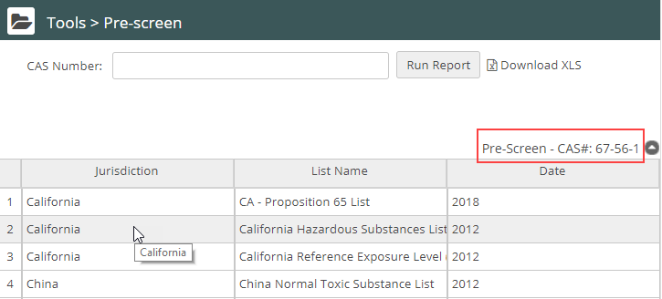

Click Tools and select Pre-screen.


The Pre-screen page opens and displays a list of all regulatory lists.

Enter the CAS Number for the ingredient.
Note: If you do not know the CAS number, you can use the Synonym Library to find it.
Click Run Report.
All regulatory and banned substance lists that contain the ingredient are listed. Click a list name to display the list. To view the regulatory list, double click on the line for that specific report.
